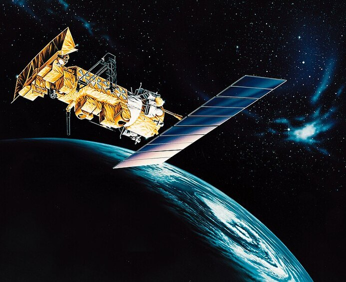

Note installazione SDR++:
quando si installa su Arch bisogna disabilitare i plugin inutilizzati o che creano degli errori durante la compilazione,
essi possono essere disattivati all'interno della CMakeLists.txt nel mio caso ho dovuto disabilitare: libairspyhf e libhackrf.
/*https://www.nooelec.com/store/downloads/dl/file/id/72/product/0/nesdr_installation_manual_for_ubuntu.pdf installazzione driver su linux*/

Meteor M2-3
I satelliti METEOR sono una serie di satelliti eliosincroni in orbita polare che orbitano attorno alla Terra a circa 800 km dal suolo.
La loro orbita è scelta in modo che passino sulla stessa posizione all'incirca 2 volte alla stessa ora solare ogni giorno.
Due satelliti sono attualmente operativi in modalità LRPT: METEOR-M N°2-3 e N°2-4
METEOR-M N2 è stato disattivato nel gennaio 2023 a seguito di un guasto nel suo sistema di mantenimento dell'assetto,
e METEOR-M N2-2 è attivo solo su HRPT (1,7 GHz) a seguito di una depressurizzazione probabilmente dovuta a una collisione con un micrometeorite o altri detriti spaziali.